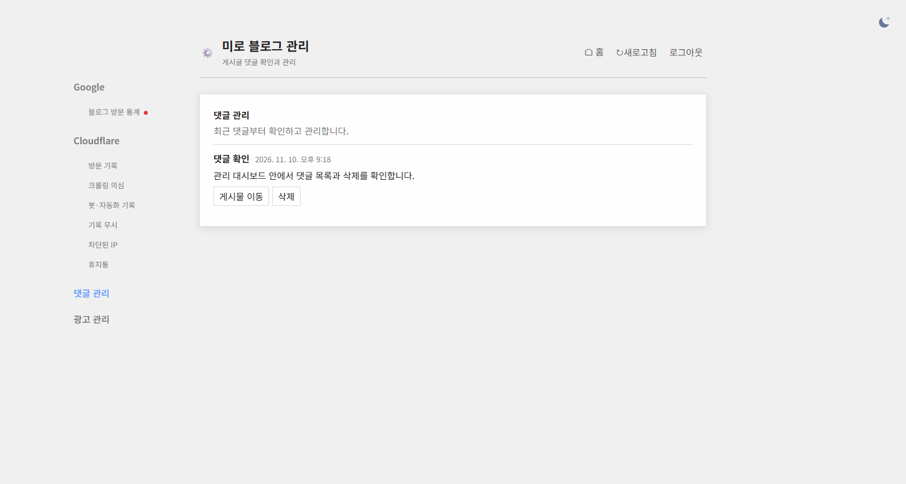
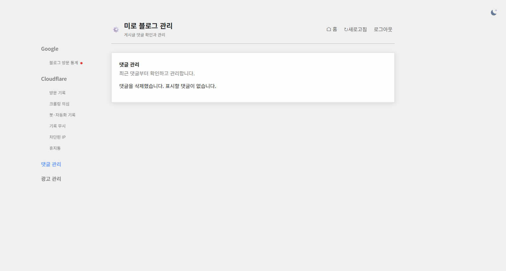
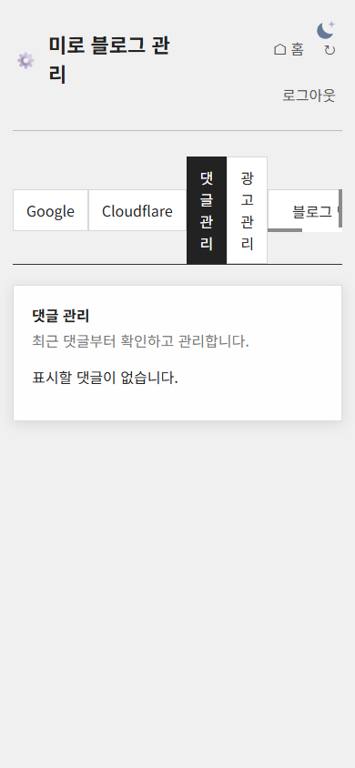

Tracefolio REPORTS & ISSUES
Tracefolio REPORTS & ISSUES댓글 관리를 같은 관리자 대시보드 탭으로 통합
완료왼쪽 메뉴와 테마를 유지하며 댓글 관리가 중앙 패널에 표시됩니다.
작업 결과
관리 대시보드에 댓글 탭을 배포했습니다. 메뉴를 클릭하면 같은 페이지에서 댓글 목록과 관리 버튼이 표시됩니다.
변경 내용
적용 내용
admin/portfolio.mjs의 탭 전환이 댓글 패널을 표시하고 목록 조회를 요청합니다. 패널과 버튼은 기존 대시보드의 배경·텍스트·테두리·강조색을 따릅니다.admin/comments-panel.html이 목록, 원글 이동, 삭제를 표시합니다. 삭제 후 현재 목록을 다시 읽습니다.admin/comments.mjs는 인증과 삭제 요청의 출처를 검증한 다음 D1을 조회하거나 수정합니다. 기존 주소는 같은 관리자 대시보드의 댓글 탭으로 연결됩니다.- 운영 Worker는 기존 대시보드 소스를 유지했고, 저장소에는 기존 관리자 템플릿에도 댓글 패널을 통합했습니다.
export async function commentAdministration(request, env, blog) {
const url = new URL(request.url);
if (!configured(env)) return reply({error: '관리자 로그인 설정을 확인해 주세요.'}, 503);
if (!await authorized(request, env)) return reply({error: '관리자 로그인이 필요합니다.'}, 401);
if (!env.COMMENTS_DB) return reply({error: '댓글 저장소를 확인해 주세요.'}, 503);
const remove = url.pathname.match(/^\/api\/admin\/comments\/([1-9]\d{0,15})$/);
if (request.method === 'DELETE' && remove && positiveId(remove[1])) {
if (request.headers.get('Origin') !== url.origin) return reply({error: '요청 출처를 확인해 주세요.'}, 403);
await env.COMMENTS_DB.prepare('DELETE FROM comments WHERE id = ?').bind(Number(remove[1])).run();
return new Response(null, {status: 204, headers});
}
if (url.pathname !== '/api/admin/comments' || request.method !== 'GET') return reply({error: '지원하지 않는 요청입니다.'}, 405);
const before = url.searchParams.get('before');
if (before !== null && !positiveId(before)) return reply({error: '잘못된 목록 위치입니다.'}, 400);
const {results} = await env.COMMENTS_DB.prepare(
'SELECT id, post, nickname, body, created_at FROM comments WHERE id < ? ORDER BY id DESC LIMIT ?',
).bind(before ? Number(before) : Number.MAX_SAFE_INTEGER, pageSize + 1).all();
const comments = results.slice(0, pageSize).map(({post, ...comment}) => ({
...comment, postUrl: blog + '/posts/' + encodeURIComponent(post) + '/#comments-title',
}));
return reply({comments, next: results.length > pageSize ? comments.at(-1).id : null});
}
flowchart LR A["댓글 관리 탭 선택"] --> B["기존 대시보드 안에서 패널 표시"] B --> C["인증된 목록 요청"] C --> D["D1의 최신 댓글 표시"] D --> E["게시물 댓글 위치로 이동"]
flowchart LR
A["댓글 삭제 클릭"] --> B{"관리자 인증 및 요청 출처 확인"}
B -->|통과| C["D1 댓글 삭제"]
C --> D["같은 탭에서 목록 갱신"]
B -->|거부| E["401 또는 403 응답"]
대화 기록
- 사용자 (시각 미기록) · “따로 페이지 만들지 말고 한 페이지에서 해”
- 사용자 (시각 미기록) · “디자인 톤도 맞춰주고”
- AI (21:18 KST) · 기존 메뉴와 패널의 스타일을 사용하고, 탭 전환과 삭제를 확인해 배포했습니다.
검증
- 인증된 로컬 브라우저에서 댓글 탭 선택 후 주소·헤더 유지, 원글 URL, 삭제 후 목록 갱신, 통계 탭 복귀 및 모바일 표시를 확인했습니다.
- 운영에서 패널과 메뉴를 확인했고, 기존 주소는 303으로 같은 대시보드 탭에 연결되며 미로그인 목록 API는 401을 반환했습니다.




남은 사항
운영 Google 로그인 후 목록과 삭제는 미확인입니다. 운영 라우팅과 인증 경계, 로컬 로그인 상태의 기능을 각각 확인했습니다. 전역 및 프로젝트 전용 지침은 기존 규칙을 유지했습니다.
작업 시간
- 제안 시간: 5~9분
- 실제로 완료된 시간: 기능 배포와 확인 3분 8초. 2026-11-10 21:15:43 시작, 21:18:51 KST 완료.
- XERJ: 미사용 — 지정 검색 도구 미사용.